conda create -n exp-tracking-env python=3.92. Experiment tracking and model management
Spreadsheets are a familiar tool and widely used across different industries. Many people are already familiar with spreadsheet software like Microsoft Excel or Google Sheets, making it easier to adopt and use for experiment tracking without requiring additional learning or training.
However, as the complexity and scale of your experiments increase, and your experiment tracking needs evolve, dedicated experiment tracking platforms may provide more advanced features and better support for reproducibility, collaboration, and scalability.
2.1 Experiment tracking intro

Experiment tracking in machine learning refers to the practice of systematically recording and organizing information about machine learning experiments. It involves capturing various aspects of an experiment, such as hyperparameters, datasets, model architecture, evaluation metrics, and results. Experiment tracking platforms or tools are often used to facilitate this process.
The purpose of experiment tracking is to enable reproducibility, collaboration, and optimization of machine learning workflows. By keeping a detailed record of experiments, researchers and data scientists can easily revisit and reproduce previous experiments, compare different approaches, and make informed decisions about model improvements. Experiment tracking also helps in identifying patterns, understanding the impact of various factors on model performance, and sharing findings with colleagues.
2.2 Getting started with MLflow
MLflow is an open-source platform for managing the machine learning lifecycle. It provides a comprehensive set of tools and APIs to help data scientists and machine learning engineers track, manage, and deploy machine learning experiments and models. MLflow aims to simplify the process of building, sharing, and reproducing machine learning projects.
The main components of MLflow are:
Tracking:MLflow Tracking allows users to log and organize experiments. It captures parameters, metrics, and artifacts (such as models or visualizations) associated with each run. The tracking component enables easy comparison and reproducibility of experiments, as well as visualization of experiment results.Projects:MLflow Projects provide a standard format for organizing and packaging code in a machine learning project. It allows you to define dependencies, specify the entry point for running the project, and easily reproduce and share the project with others.Models:MLflow Models provides a way to manage and deploy machine learning models in a standardized manner. It supports various model formats and allows easy deployment to different execution environments, such as local deployment or serving through REST APIs.Model Registry (Enterprise Edition):MLflow Model Registry (available in the Enterprise Edition) offers model versioning, stage management, and collaboration features. It allows teams to manage and track the lifecycle of models, including transitioning models between development stages, approving and promoting models, and enabling collaboration among team members.
MLflow supports multiple programming languages and integrates with popular machine learning libraries and frameworks like TensorFlow, PyTorch, and scikit-learn. It can be used both locally and in distributed computing environments like Apache Spark.
Overall, MLflow simplifies the process of managing and tracking machine learning experiments, facilitating collaboration, reproducibility, and deployment of machine learning models. It provides a unified interface and toolset to help data scientists and machine learning practitioners manage the entire lifecycle of their projects.
2.2.1 Installing MLflow
First, let’s set up a virtual environment by running the following from the command line:
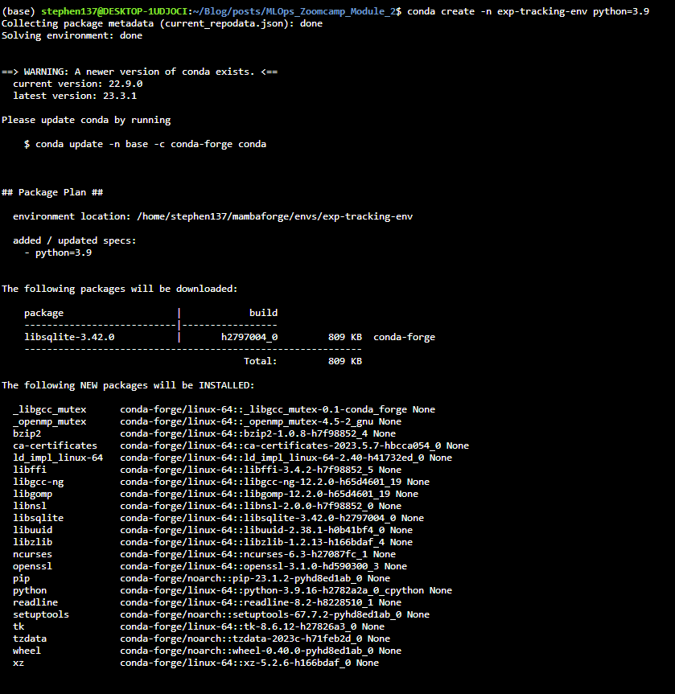
And then activate the environment :
conda activate exp-tracking-envAnd install the following dependencies :
requirements.txt
mlflow
jupyter
scikit-learn
pandas
seaborn
hyperopt
xgboost
fastparquet
boto3
pip install -r requirements.txt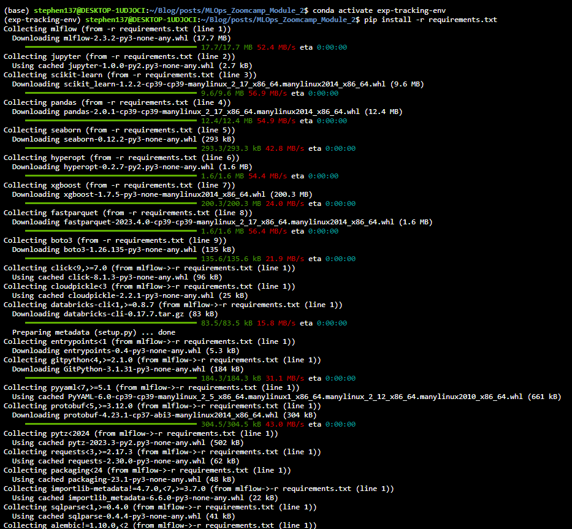
With all the dependencies intalled, we are ready to roll. To initiate MLllow and get access to the CLI just type the following in your terminal :
mlflow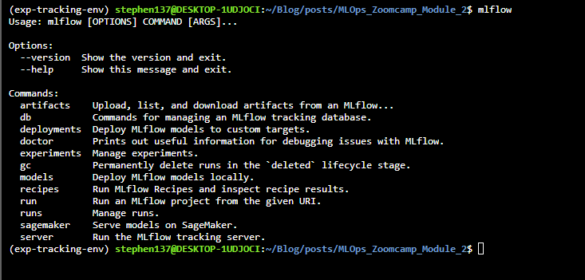
2.2.2 The MLFlow UI
To launch the MLflow UI enter the following from the command line :
mlflow ui --backend-store-uri sqlite:///mlflow.db
Important
Make sure you launch the mlflow UI from the same directory as the scripts/jupyter notebook that is running the experiments (same directory that has the mlflow directory and the database that stores the experiments).
I found that running:
mlflow serverworked without any problems.
And we can view by copying the highlighted link http://127.0.0.1:5000 into your browser :
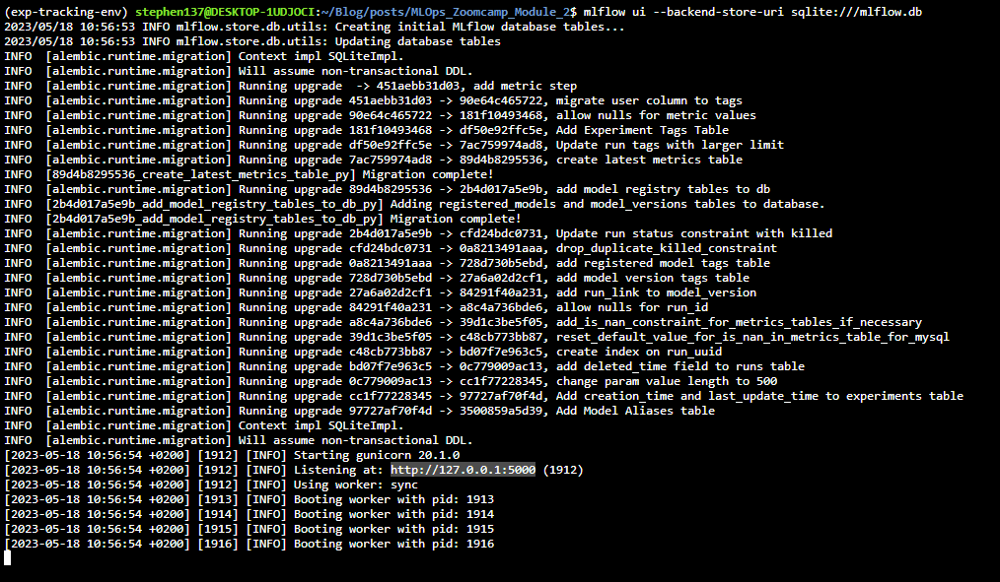
Note, if you get an error message along the lines of Connection in use: ('127.0.0.1', 5000) this means you already have something running on port 5000, and you need to kill it.
Run the following command on the terminal :
ps -A | grep gunicornand then look for the number process id which is the 1st number after running the command. Then kill it using :
kill <process_id> # replace with the 1st number after running ps -A | grep gunicorn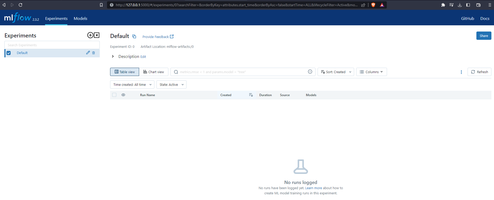
We have no experiments at the moment. Let’s create one following the Linear Regression model we built in the previous module to predict the duration of a taxi trip.
# check Python version
!python -VPython 3.9.16import pandas as pd # working with tabular data
import pickle # for machine learning models
import seaborn as sns # visualization
import matplotlib.pyplot as plt # visualization
from sklearn.feature_extraction import DictVectorizer # Machine Learning
from sklearn.linear_model import LinearRegression # Machine Learning
from sklearn.linear_model import Lasso # Regularization
from sklearn.linear_model import Ridge # Regularization
from sklearn.metrics import mean_squared_error # Loss Functionimport mlflow
# to hook up with MLFlow UI
mlflow.set_tracking_uri("sqlite:///mlflow.db")
mlflow.set_experiment("mlops_nyc_taxi") # choose a name for your experiment<Experiment: artifact_location='/home/stephen137/Blog/posts/MLOps_Zoomcamp_Module_2/mlruns/3', creation_time=1684439443423, experiment_id='3', last_update_time=1684439443423, lifecycle_stage='active', name='mlops_nyc_taxi', tags={}>If we return to the MLflow UI we can see that our experiment nyc_taxi_experiment has been successfully initiated.
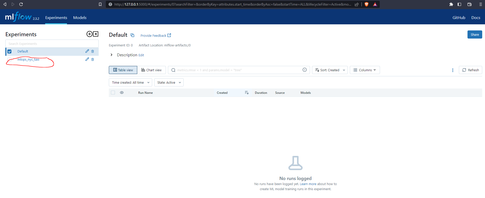
If you recall in Module 1 the code was scattered, and at times difficult to follow. Let’s replicate it here to at least get a baseline for improvement using MLflow.
!wget https://d37ci6vzurychx.cloudfront.net/trip-data/yellow_tripdata_2022-01.parquet https://d37ci6vzurychx.cloudfront.net/trip-data/yellow_tripdata_2022-02.parquet--2023-05-18 20:52:44-- https://d37ci6vzurychx.cloudfront.net/trip-data/yellow_tripdata_2022-01.parquet
Resolving d37ci6vzurychx.cloudfront.net (d37ci6vzurychx.cloudfront.net)... 18.244.96.218, 18.244.96.180, 18.244.96.25, ...
Connecting to d37ci6vzurychx.cloudfront.net (d37ci6vzurychx.cloudfront.net)|18.244.96.218|:443... connected.
HTTP request sent, awaiting response... 200 OK
Length: 38139949 (36M) [application/x-www-form-urlencoded]
Saving to: ‘yellow_tripdata_2022-01.parquet’
yellow_tripdata_202 100%[===================>] 36.37M 52.2MB/s in 0.7s
2023-05-18 20:52:45 (52.2 MB/s) - ‘yellow_tripdata_2022-01.parquet’ saved [38139949/38139949]
--2023-05-18 20:52:45-- https://d37ci6vzurychx.cloudfront.net/trip-data/yellow_tripdata_2022-02.parquet
Reusing existing connection to d37ci6vzurychx.cloudfront.net:443.
HTTP request sent, awaiting response... 200 OK
Length: 45616512 (44M) [application/x-www-form-urlencoded]
Saving to: ‘yellow_tripdata_2022-02.parquet’
yellow_tripdata_202 100%[===================>] 43.50M 56.0MB/s in 0.8s
2023-05-18 20:52:45 (56.0 MB/s) - ‘yellow_tripdata_2022-02.parquet’ saved [45616512/45616512]
FINISHED --2023-05-18 20:52:45--
Total wall clock time: 1.7s
Downloaded: 2 files, 80M in 1.5s (54.2 MB/s)def read_dataframe(filename):
if filename.endswith('.csv'):
df = pd.read_csv(filename)
df.tpep_dropoff_datetime = pd.to_datetime(df.tpep_dropoff_datetime)
df.tpep_pickup_datetime = pd.to_datetime(df.tpep_pickup_datetime)
elif filename.endswith('.parquet'):
df = pd.read_parquet(filename)
df['duration'] = df.tpep_dropoff_datetime - df.tpep_pickup_datetime
df.duration = df.duration.apply(lambda td: td.total_seconds() / 60)
df = df[(df.duration >= 1) & (df.duration <= 60)]
categorical = ['PULocationID', 'DOLocationID']
df[categorical] = df[categorical].astype(str)
return dfdf_train = read_dataframe('yellow_tripdata_2022-01.parquet')
df_val = read_dataframe('yellow_tripdata_2022-02.parquet')len(df_train), len(df_val)(2421440, 2918187)df_train['PU_DO'] = df_train['PULocationID'] + '_' + df_train['DOLocationID']
df_val['PU_DO'] = df_val['PULocationID'] + '_' + df_val['DOLocationID']categorical = ['PU_DO'] #'PULocationID', 'DOLocationID']
numerical = ['trip_distance']
dv = DictVectorizer()
train_dicts = df_train[categorical + numerical].to_dict(orient='records')
X_train = dv.fit_transform(train_dicts)
val_dicts = df_val[categorical + numerical].to_dict(orient='records')
X_val = dv.transform(val_dicts)target = 'duration'
y_train = df_train[target].values
y_val = df_val[target].valueslr = LinearRegression()
lr.fit(X_train, y_train)
y_pred = lr.predict(X_val)
mean_squared_error(y_val, y_pred, squared=False)5.530468126047705with open('./models/lin_reg.bin', 'wb') as f_out: # wb means write binary mlops-zoomcamp/week_1/models
try:
# Pickle both the dictionary vectorizer and the linear regression model
pickle.dump((dv, lr), f_out)
print("Model successfully pickled.")
except Exception as e:
print("Error occurred while pickling the model:", str(e))Model successfully pickled.Let’s harness MLFlow to incorporate some structure into our flow, making it easier to follow, easier to iterate over different models and parameters, and easier to track changes.
A code snippet is included below to demonstrate how we can achieve this :
with mlflow.start_run():
mlflow.set_tag("developer", "stephen")
mlflow.log_param("train-data-path", "./data/green_tripdata_2021-01.csv")
mlflow.log_param("valid-data-path", "./data/green_tripdata_2021-02.csv")
alpha = 0.1
mlflow.log_param("alpha", alpha)
lr = Lasso(alpha)
lr.fit(X_train, y_train)
y_pred = lr.predict(X_val)
rmse = mean_squared_error(y_val, y_pred, squared=False)
mlflow.log_metric("rmse", rmse)
mlflow.log_artifact(local_path="models/lin_reg.bin", artifact_path="models_pickle") # where model savedmlflow.log_artifact() logs a local file or directory as an artifact, optionally taking an artifact_path to place it in within the run’s artifact URI. Run artifacts can be organized into directories, so you can place the artifact in a directory this way.
If we now revisit the Mlflow UI we can see that the run status is FINISHED and has completed successfully. We have a note of our Tag, Parmaeters, Metrics and Artifacts as specified above in with mlflow.start_run():.
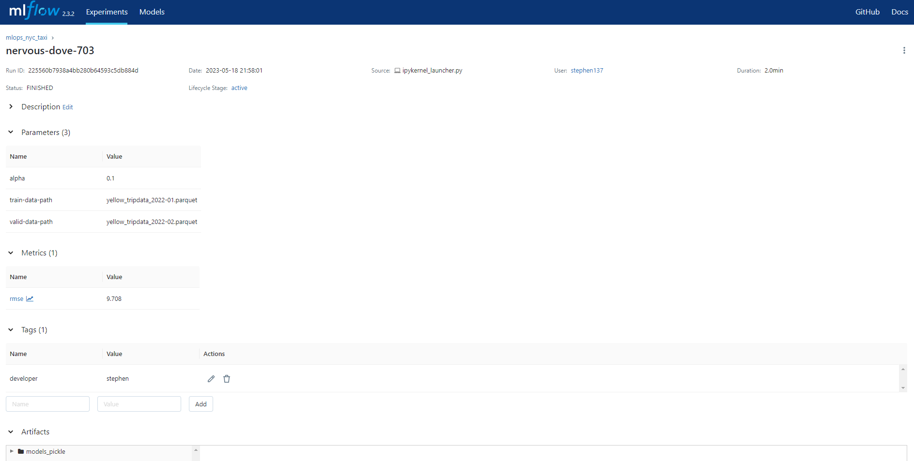
2.3 Experiment tracking with MLflow
2.3.1 XGBoost
In order to demonstrate MLflow’s capabilities more fully, let’s look at a more complex model which uses XGBoost.
XGBoost, short for “Extreme Gradient Boosting,” is a popular machine learning algorithm known for its effectiveness in predictive modeling and data analysis tasks. It belongs to the family of gradient boosting methods, which are ensemble learning techniques that combine multiple weak prediction models, typically decision trees, to create a strong predictive model.
XGBoost is particularly renowned for its scalability, efficiency, and accuracy. It incorporates advanced techniques such as gradient boosting, regularization, and parallel processing to enhance model performance. It can handle a wide range of data types and is often used for both regression and classification problems.
The algorithm works by iteratively building decision trees to minimize a specified loss function. Each subsequent tree focuses on correcting the errors made by the previous trees, resulting in a highly accurate ensemble model. Additionally, XGBoost allows for custom optimization objectives and evaluation metrics, providing flexibility to address various problem domains.
Due to its exceptional performance and versatility, XGBoost has gained popularity in various fields, including finance, healthcare, marketing, and more. It has been widely adopted in data science competitions and is a favored choice among practitioners when tackling complex machine learning problems.
# import required modules
import xgboost as xgb
from hyperopt import fmin, tpe, hp, STATUS_OK, Trials # some methods to optimize hyperparameters
from hyperopt.pyll import scopeFMin
https://github.com/hyperopt/hyperopt/wiki/FMin
Tree-structured Parzen Estimator Approach (TPE)
The Tree-structured Parzen Estimator Approach (TPE) is a Bayesian optimization algorithm used for hyperparameter tuning in machine learning models. It is a popular alternative to traditional grid search and random search methods. TPE aims to efficiently search the hyperparameter space by iteratively exploring and exploiting the most promising regions based on previous evaluations.
TPE divides the search space into two parts: the “prior” and the “posterior.” The prior represents the probability distribution of hyperparameters, while the posterior reflects the conditional probability distribution of hyperparameters given their corresponding objective function values.
The algorithm operates in a two-step process. First, it builds a probabilistic model to estimate the posterior distribution of the hyperparameters using a set of previously evaluated points. This model is typically constructed using a tree structure called a “density ratio” that captures the relative densities of better-performing hyperparameters compared to worse-performing ones.
In the second step, TPE generates a new set of candidate hyperparameters by sampling from the estimated posterior distribution. The selection of candidates is biased towards regions with higher probability of improving the objective function, leveraging the knowledge gained from previous evaluations.
By iteratively repeating these steps, TPE explores and refines the hyperparameter search space, gradually converging towards the optimal configuration. It focuses on exploring promising regions during the early stages of optimization and exploits those regions as the optimization progresses.
TPE has gained popularity due to its ability to efficiently search high-dimensional and complex hyperparameter spaces. It has been successfully applied in various domains, including deep learning, machine learning model selection, and reinforcement learning.
hp
In Hyperopt, hyperparameters are defined using the “hp” module provided by the library. This module offers a set of functions to define different types of hyperparameters, including continuous, discrete, and conditional hyperparameters. These functions enable the creation of a search space over which the optimization algorithm can explore to find the optimal hyperparameter values.
Trials
By passing in a trials object directly, we can inspect all of the return values that were calculated during the experiment.
So for example:
trials.trials- a list of dictionaries representing everything about the searchtrials.results- a list of dictionaries returned by ‘objective’ during the searchtrials.losses()- a list of losses (float for each ‘ok’ trial)trials.statuses()- a list of status strings
This trials object can be saved, passed on to the built-in plotting routines, or analyzed with your own custom code.
Let’s now define our training and validation datasets and configure our MLflow run :
train = xgb.DMatrix(X_train, label=y_train)
valid = xgb.DMatrix(X_val, label=y_val)# Objective function - set the parameters for this specific run
def objective(params):
with mlflow.start_run():
mlflow.set_tag("model", "xgboost")
mlflow.log_params(params)
booster = xgb.train(
params=params,
dtrain=train, # model trained on training set
num_boost_round=3, # restricted due to time constraints - a value of 1000 iterations is common
evals=[(valid, 'validation')], # model evaluated on validation set
early_stopping_rounds=3 # if no improvements after 3 iterations, stop running # restricted, time constraints
)
y_pred = booster.predict(valid)
rmse = mean_squared_error(y_val, y_pred, squared=False)
mlflow.log_metric("rmse", rmse)
return {'loss': rmse, 'status': STATUS_OK}2.3.2 Setting the Hyperparamter optimization search range
# Set the range of the hyperparameter optimization search
search_space = {
'max_depth': scope.int(hp.quniform('max_depth', 4, 100, 1)), # tree depth 4 to 100. Returns float, so convert to integer
'learning_rate': hp.loguniform('learning_rate', -3, 0), # range exp(-3), exp(0) which is (0.049787, 1.0)
'reg_alpha': hp.loguniform('reg_alpha', -5, -1), # range exp(-5), exp(-1) which is (0.006738, 0.367879)
'reg_lambda': hp.loguniform('reg_lambda', -6, -1), # range exp(-6), exp(-1) which is (0.002479, 0.367879)
'min_child_weight': hp.loguniform('min_child_weight', -1, 3), # range exp(-1), exp(3) which is (0.367879, 20.085537)
'objective': 'reg:linear',
'seed': 42
}
best_result = fmin( # imported above
fn=objective,
space=search_space, # as defined above
algo=tpe.suggest, # tpe is the algorithm used for optimization
max_evals=3, #restricted, time constraints
trials=Trials()
)[22:45:26] WARNING: ../src/objective/regression_obj.cu:213: reg:linear is now deprecated in favor of reg:squarederror.
[0] validation-rmse:15.30102
[1] validation-rmse:14.27922
[2] validation-rmse:13.34956
[22:45:43] WARNING: ../src/objective/regression_obj.cu:213: reg:linear is now deprecated in favor of reg:squarederror.
[0] validation-rmse:10.51801
[1] validation-rmse:7.55540
[2] validation-rmse:6.17083
[22:45:57] WARNING: ../src/objective/regression_obj.cu:213: reg:linear is now deprecated in favor of reg:squarederror.
[0] validation-rmse:13.82562
[1] validation-rmse:11.78374
[2] validation-rmse:10.19087
100%|███████████████████████████████████| 3/3 [00:33<00:00, 11.15s/trial, best loss: 6.170828197460482]hp.quniform(label, low, high, q)
- Returns a value like round(uniform(low, high) / q) * q
- Suitable for a discrete value with respect to which the objective is still somewhat “smooth”, but which should be bounded both above and below.
hp.loguniform(label, low, high)
- Returns a value drawn according to exp(uniform(low, high)) so that the logarithm of the return value is uniformly distributed.
- When optimizing, this variable is constrained to the interval [exp(low), exp(high)]
A detailed guide on setting the search space is included within the official Hyperopt documentation.
2.3.3 Visualizations
Table View
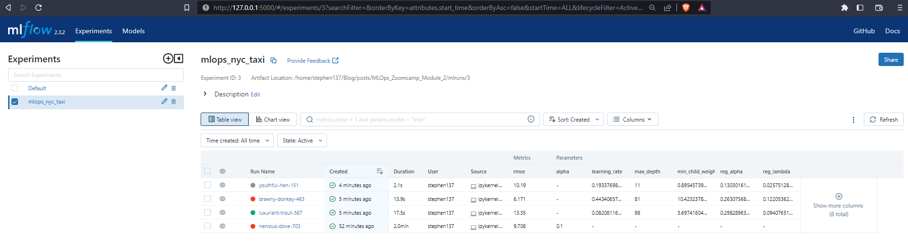
The Table View allows a basic comparison to be made. You can specify which colums to display. In my case we can see that the brawny-donkey-463 model returns the lowest RMSE, 6.171 an improvement over our baseline figure of 9.71.
Chart View
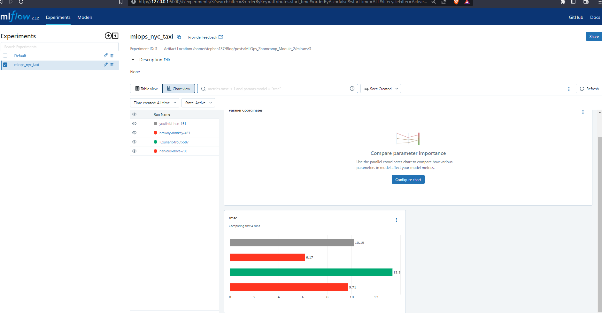
The Chart View offers a slightly better visualization - a horizontal bar chart. However if we want to fully understand our models then we need a more complex visualization which deals with the inter-relationships between the various parameters, and their impact on the RMSE.
Compare
You can filter the models you want to compare using tags.model=<model_name> select them all by ticking the boxes, and then hit Compare.
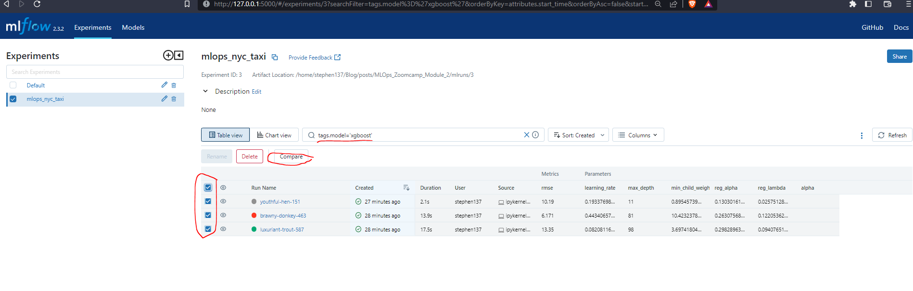
Parallel Coordinates Plot
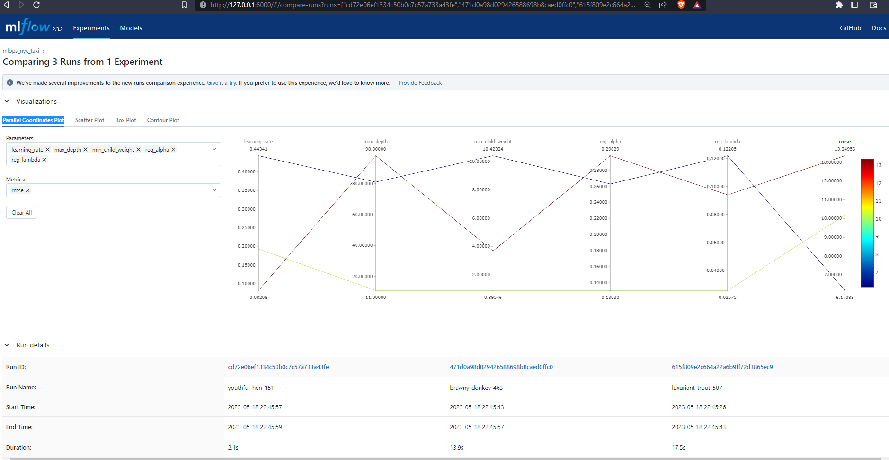
Scatter Plot
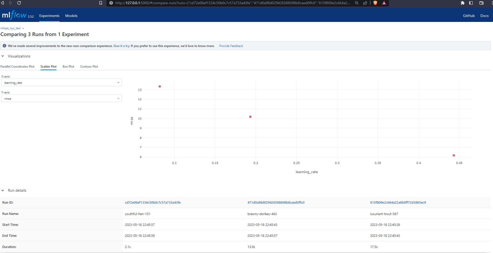
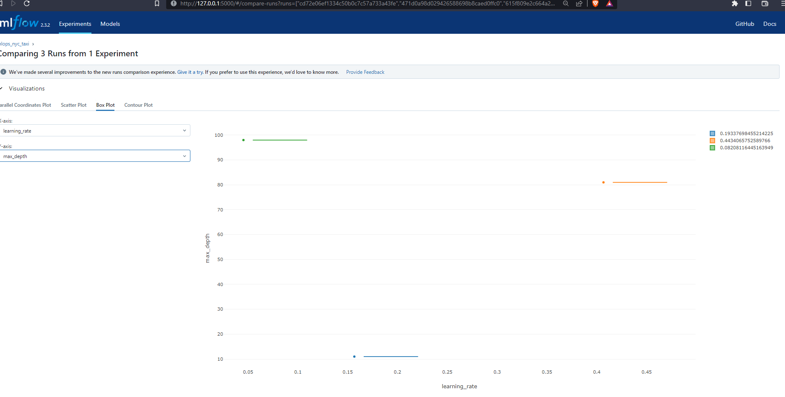
Contour Plot
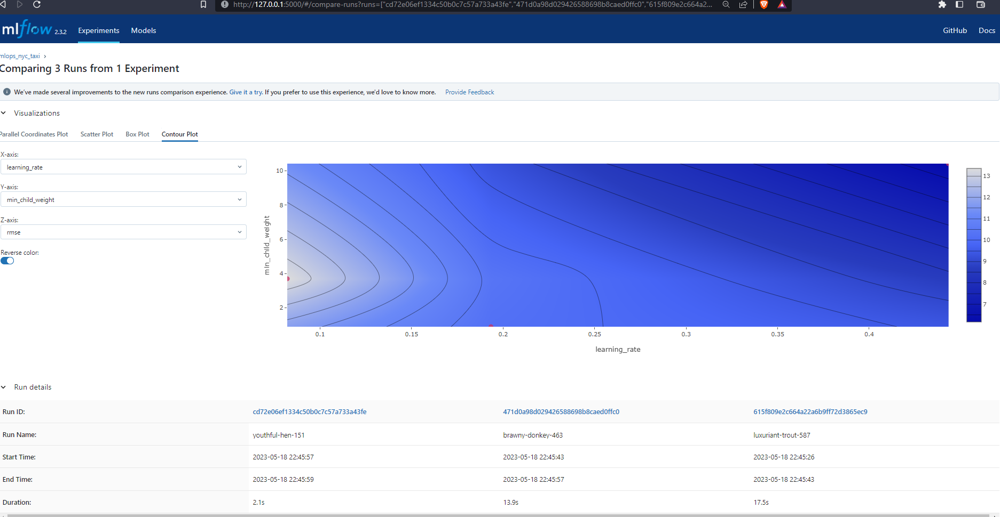
2.3.4 Selecting the best model
The easisest way to rank the models is to sort the Metrics column of the Table View however it is not all about the metric.
Speed is also something to consider. In my simple example, although the brawny-donkey-463 model returned the lowest RMSE, the youthful-hen-151 model was the fastest 2.1s. The old addage, time is money is very much true in a production environment, and so we need to factor in how long it takes to train our models.
Model complexity is another factor. The brawny-donkey-463 is quite complex with max_depth=81, whilst the youthful-hen-151 model is less so with max_depth=11. The higher the complexity the lower the interpretability. We need to understand what our model is doing ‘under the hood’ before we can explain it.
2.3.5 Training the model selected as the best
So, let’s say after careful consideration of metrics, time, and complexity we decide to go with the brawn-donkey-463 model. We can grab its pararmeters and copy them into a params dictionary:
params = {
'learning_rate': 0.4434065752589766,
'max_depth': 81,
'min_child_weight': 10.423237853746643,
'objective': 'reg:linear',
'reg_alpha': 0.2630756846813668,
'reg_lambda': 0.1220536223877784,
'seed': 42
}We can then make use of Automatic Logging.
2.3.6 Automatic Logging
Automatic logging allows you to log metrics, parameters, and models without the need for explicit log statements.
There are two ways to use autologging:
Call
mlflow.autolog()before your training code. This will enable autologging for each supported library you have installed as soon as you import it.Use library-specific autolog calls for each library you use in your code.
The following libraries support autologging:
- Scikit-learn
- Keras
- Gluon
- XGBoost
- LightGBM
- Statsmodels
- Spark
- Fastai
- Pytorch
We can then run the model training, in our case using the XGBoost library prompt :
mlflow.xgboost.autolog()
booster = xgb.train(
params=params,
dtrain=train, # model trained on training set
num_boost_round=3, # restricted due to time constraints - a value of 1000 iterations is common
evals=[(valid, 'validation')], # model evaluated on validation set
early_stopping_rounds=3 # if no improvements after 3 iterations, stop running # restricted, time constraints
)2023/05/19 09:37:00 INFO mlflow.utils.autologging_utils: Created MLflow autologging run with ID '3294af67608c45ca96e3d9f56e61edd4', which will track hyperparameters, performance metrics, model artifacts, and lineage information for the current xgboost workflow[09:37:00] WARNING: ../src/objective/regression_obj.cu:213: reg:linear is now deprecated in favor of reg:squarederror.
[0] validation-rmse:10.51801
[1] validation-rmse:7.55540
[2] validation-rmse:6.170832023/05/19 09:37:23 WARNING mlflow.utils.autologging_utils: MLflow autologging encountered a warning: "/home/stephen137/mambaforge/envs/exp-tracking-env/lib/python3.9/site-packages/_distutils_hack/__init__.py:33: UserWarning: Setuptools is replacing distutils."If we go to the UI we can see that a new run has been logged with much more information:
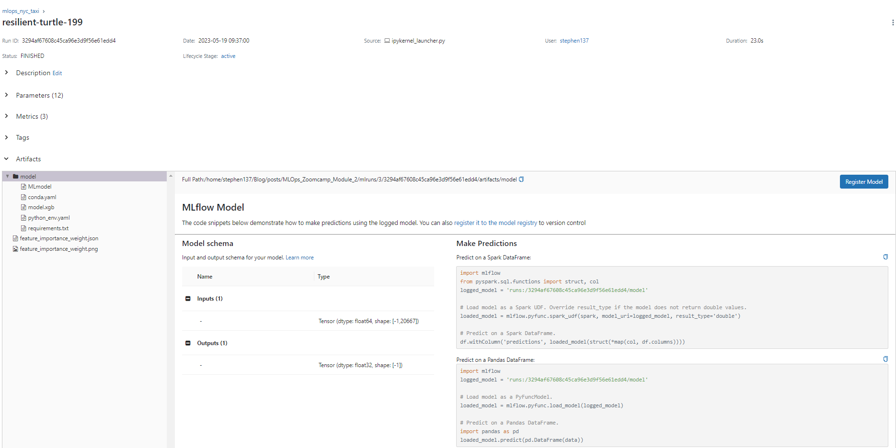
If we look at the Metrics we can visualize the evolution of the RMSE:
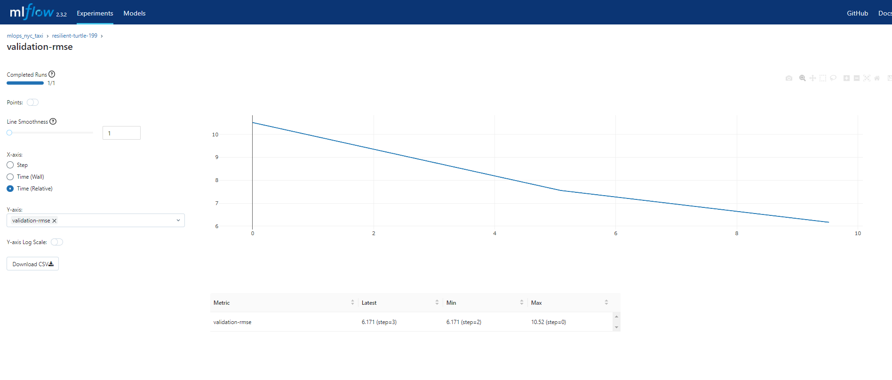
We also have the model details if we wish to reproduce this :
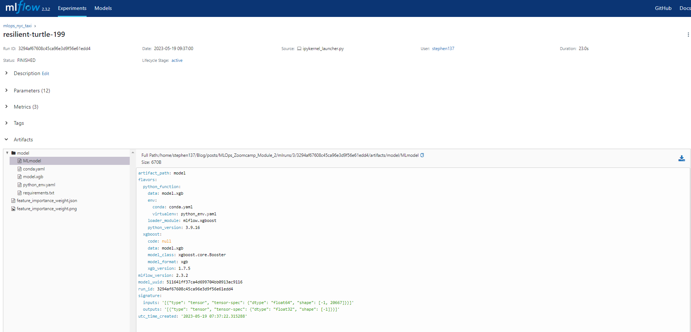
2.4 Model management
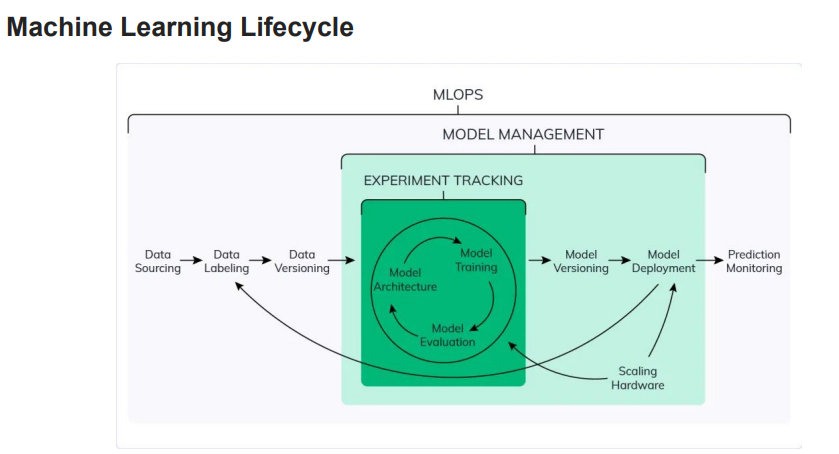
In the previous section we looked at Experiment Tracking, but model management also encompasses :
- Model Versioning
- Model Deployment
- Scaling Hardware
2.4.1 Model Versioning
We could use a folders system as a very basic way to manage our model versions, but this has a number of shortcomings. 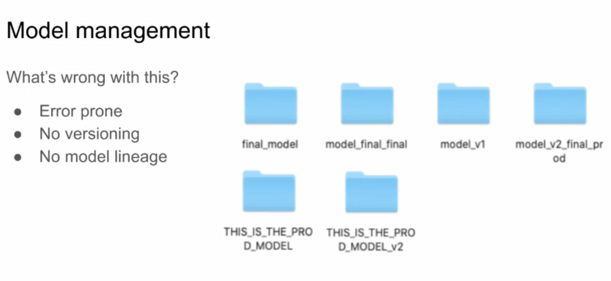
Let’s see how we can leverage MLflow to handle version control.
mlflow.xgboost.autolog(disable=True) # MLflow will not store parameters automatically - these will have to be requestedwith mlflow.start_run():
train = xgb.DMatrix(X_train, label=y_train)
valid = xgb.DMatrix(X_val, label=y_val)
best_params = {
'learning_rate': 0.4434065752589766,
'max_depth': 81,
'min_child_weight': 10.423237853746643,
'objective': 'reg:linear',
'reg_alpha': 0.2630756846813668,
'reg_lambda': 0.1220536223877784,
'seed': 42
}
mlflow.log_params(best_params)
booster = xgb.train(
params=params,
dtrain=train, # model trained on training set
num_boost_round=3, # restricted due to time constraints - a value of 1000 iterations is common
evals=[(valid, 'validation')], # model evaluated on validation set
early_stopping_rounds=3 # if no improvements after 3 iterations, stop running # restricted, time constraints
)
y_pred = booster.predict(valid)
rmse = mean_squared_error(y_val, y_pred, squared=False)
mlflow.log_metric("rmse", rmse)
with open("models/preprocessor.b", "wb") as f_out: # save pre-processing as a model
pickle.dump(dv, f_out)
mlflow.log_artifact("models/preprocessor.b", artifact_path="preprocessor") # we can isolate the pre-processing from raw data
mlflow.xgboost.log_model(booster, artifact_path="models_mlflow") [10:44:08] WARNING: ../src/objective/regression_obj.cu:213: reg:linear is now deprecated in favor of reg:squarederror.
[0] validation-rmse:10.51801
[1] validation-rmse:7.55540
[2] validation-rmse:6.17083On running this we can see from the UI that both the XGB model and a pre-processing model have been saved. Later this can be loaded to preprocess the prediction data and then pass it through the XGBoost model.
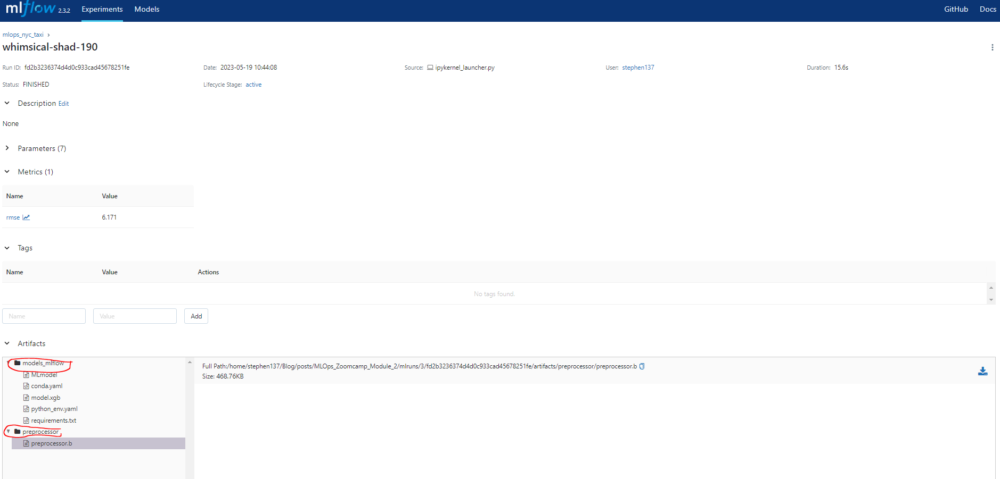
2.4.2 Making Predictions
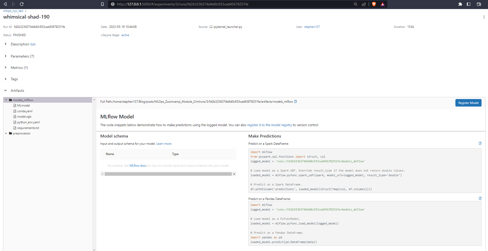
MLflow provides handy code snippets for predicting on a Spark or pandas Dataframe.
Let’s grab the pandas snippet and make a prediction. First let’s load the model. There are two flavors available, python_function or alternatively xgboost.
python_function
logged_model = 'runs:/fd2b3236374d4d0c933cad45678251fe/models_mlflow'
# Load model as a PyFuncModel.
loaded_model = mlflow.pyfunc.load_model(logged_model)2023/05/19 10:55:45 WARNING mlflow.pyfunc: Detected one or more mismatches between the model's dependencies and the current Python environment:
- mlflow (current: 2.3.2, required: mlflow==2.3)
To fix the mismatches, call `mlflow.pyfunc.get_model_dependencies(model_uri)` to fetch the model's environment and install dependencies using the resulting environment file.[10:55:45] WARNING: ../src/objective/regression_obj.cu:213: reg:linear is now deprecated in favor of reg:squarederror.We can check the type of loaded_model :
loaded_modelmlflow.pyfunc.loaded_model:
artifact_path: models_mlflow
flavor: mlflow.xgboost
run_id: fd2b3236374d4d0c933cad45678251fexgboost
xgboost_model = mlflow.xgboost.load_model(logged_model)[11:01:09] WARNING: ../src/objective/regression_obj.cu:213: reg:linear is now deprecated in favor of reg:squarederror.We can check the type of xgboost_model :
xgboost_model<xgboost.core.Booster at 0x7f06ebbc9340>Finally, we can make predictions with this model.
y_pred = xgboost_model.predict(valid)# check the first 10
y_pred[:10]array([12.633282 , 16.895218 , 27.585228 , 20.118687 , 26.492146 ,
11.089786 , 20.731995 , 4.2313485, 14.710851 , 14.201264 ],
dtype=float32)Summing up this section we have seen that it is possible to take a model trained using a host of different libraries, and log that model in MLflow. You can then access that model using different flavors e.g. as a python function, or a scikit-learn model. It then becomes very easy to make predictions and later deploy the model, for example, as a Python function, in a docker container, in a Jupyter NoteBook, or maybe as a batch job in Spark. Furthermore you can deploy to a kubernetes cluster or different cloud environments such as Amazon SageMaker or Microsoft Azure.
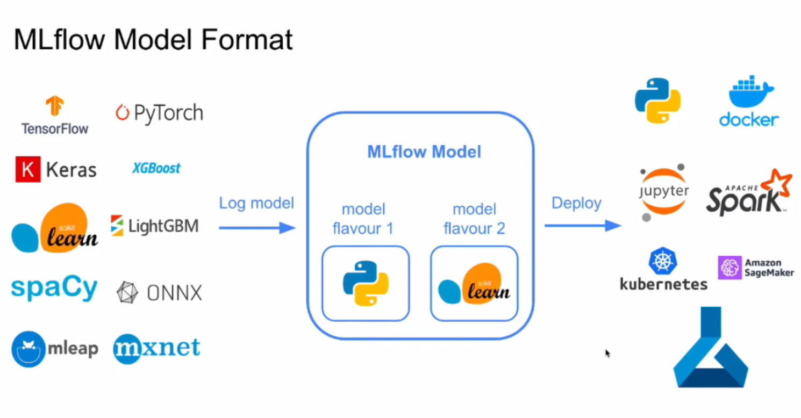
2.5 Model Registry
2.5.1 Motivation
Imagine you are a machine learning or MLOps engineer and you receive the following email from a data scientist :
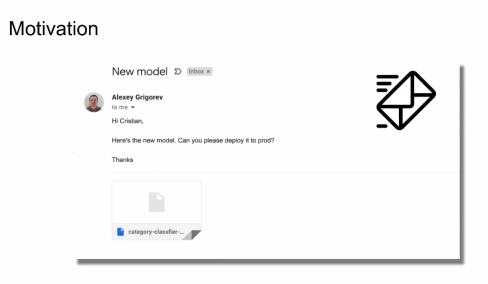
There are a number of unanswered questions that need to be answered before you would feel comfortable about deploying the model, such as :
- what has changed from previous version ?
- do hyperparameters require updating ?
- any pre-processing needed ?
- which dependencies needed to run model ?
In order to avoid any delay in model deployment due to lengthy email correspondence, or ambiguity we can harness MLflow Model Registry.
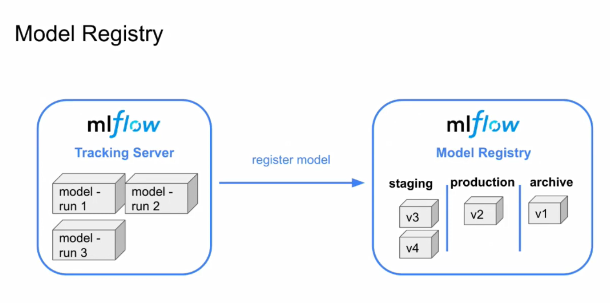
Note that model registry does not equate to deployment. It is a “waiting room” of models to be allocated to staging, production, or archive. In order to actually deploy a model we would need some CI/CD (continuous integration and continuous delivery) code.
2.5.2 Registering a model
Ok, let’s say we are happy with our whimsical-shad-190 run which was a XGBoost model, and would now like to move it to staging. To do this click Register Model and give the model a name :
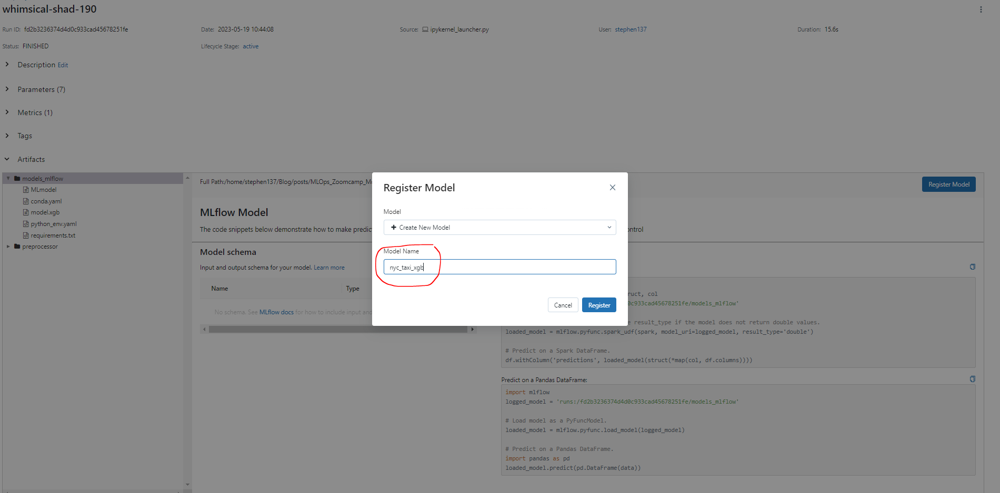
When we go to the Models tab we can now see our registered model :
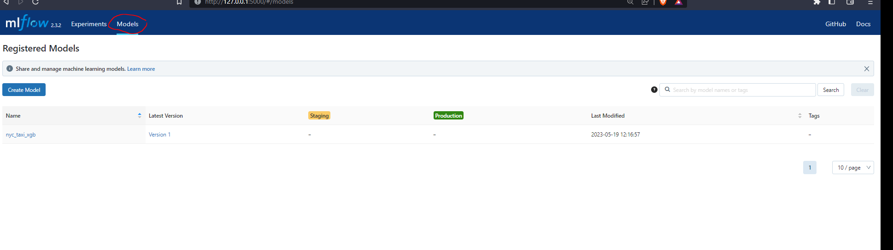
2.5.3 Stage transition
We mentioned earlier that there are three stages Staging, Production and Archive. As you can see from above, our model is newly registered, and so it has not yet been transitioned. We can do this by first clicking on the version we wish to stage, which takes us to this screen :
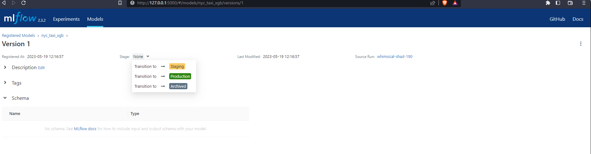
Click on Transition to -> Staging and if we return to our models tab, we can see it is now shown in the Staging column :
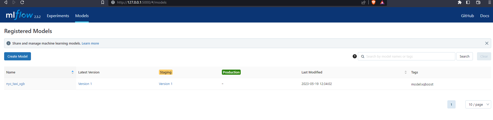
2.5.4 Interacting with the MLflow tracking server
The mlflow.client module provides a Python CRUD interface to MLflow Experiments, Runs, Model Versions, and Registered Models. This is a lower level API that directly translates to MLflow REST API calls. For a higher level API for managing an “active run”, use the mlflow module.
Essentially this allows us to interact with the MLflow UI and access the same information using Python :
from mlflow.tracking import MlflowClientMLFLOW_TRACKING_URI = "sqlite:///mlflow.db"
client = MlflowClient(tracking_uri=MLFLOW_TRACKING_URI)# create a new experiment
client.create_experiment(name="my_137_experiment") # returns the experiment ID'4'Imagine that we are trying to understand for a given experiment, what are the best models or runs :
from mlflow.entities import ViewType
runs = client.search_runs(
experiment_ids='3', # mlops_nyc_taxi
filter_string="metrics.rmse < 10", # grab only the runs with an RMSE below 10
run_view_type=ViewType.ACTIVE_ONLY,
max_results=5,
order_by=["metrics.rmse ASC"] # Ascending
)for run in runs:
print(f"run id: {run.info.run_id}, rmse: {run.data.metrics['rmse']:.4f}") # round to 4 d.prun id: fd2b3236374d4d0c933cad45678251fe, rmse: 6.1708
run id: 471d0a98d029426588698b8caed0ffc0, rmse: 6.1708
run id: 225560b7938a4bb280b64593c5db884d, rmse: 9.70802.5.5 Interacting with the Model Registry
In this section We will use the MlflowClient instance to:
- Register a new version for the experiment
mlops_nyc_taxi - Retrieve the latest versions of the model
nyc_taxi_xgband check that a new version was created - Transition the new version 2 to “Staging”
- Add annotations
Register a new version for the experiment mlops_nyc_taxi
import mlflow
mlflow.set_tracking_uri(MLFLOW_TRACKING_URI)# register the top performing model(run) from the mlops_nyc_taxi experiment
run_id = "fd2b3236374d4d0c933cad45678251fe" #
model_uri = f"runs:/{run_id}/model"
mlflow.register_model(model_uri=model_uri, name="nyc_taxi_xgb")Registered model 'nyc_taxi_xgb' already exists. Creating a new version of this model...
2023/05/19 15:30:38 INFO mlflow.tracking._model_registry.client: Waiting up to 300 seconds for model version to finish creation. Model name: nyc_taxi_xgb, version 2
Created version '2' of model 'nyc_taxi_xgb'.<ModelVersion: aliases=[], creation_timestamp=1684503038967, current_stage='None', description=None, last_updated_timestamp=1684503038967, name='nyc_taxi_xgb', run_id='fd2b3236374d4d0c933cad45678251fe', run_link=None, source='/home/stephen137/Blog/posts/MLOps_Zoomcamp_Module_2/mlruns/3/fd2b3236374d4d0c933cad45678251fe/artifacts/model', status='READY', status_message=None, tags={}, user_id=None, version=2>We can see that we now have Version 2 of our model :
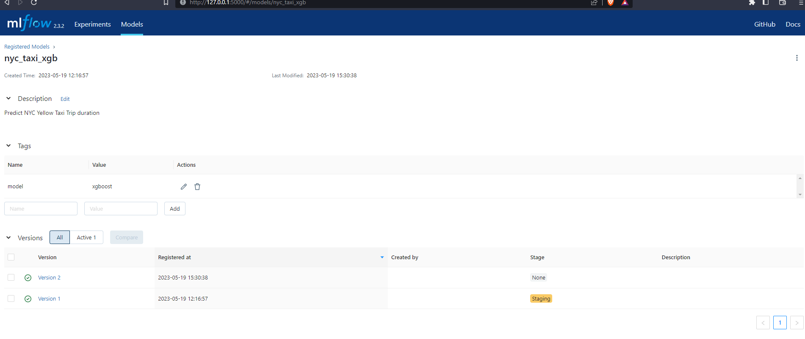
Retrieve the latest versions of the model nyc_taxi_xgb and check that a new version was created
model_name = "nyc_taxi_xgb"
latest_versions = client.get_latest_versions(name=model_name)
for version in latest_versions:
print(f"version: {version.version}, stage: {version.current_stage}")version: 1, stage: Staging
version: 2, stage: NoneTransition the new version 2 to "Staging"
model_version = 2
new_stage = "Staging"
client.transition_model_version_stage(
name=model_name,
version=model_version,
stage=new_stage,
archive_existing_versions=False # so version 1 will remain in Staging
)<ModelVersion: aliases=[], creation_timestamp=1684503038967, current_stage='Staging', description=None, last_updated_timestamp=1684503630353, name='nyc_taxi_xgb', run_id='fd2b3236374d4d0c933cad45678251fe', run_link=None, source='/home/stephen137/Blog/posts/MLOps_Zoomcamp_Module_2/mlruns/3/fd2b3236374d4d0c933cad45678251fe/artifacts/model', status='READY', status_message=None, tags={}, user_id=None, version=2>We can see that this has been actioned sucessfully :
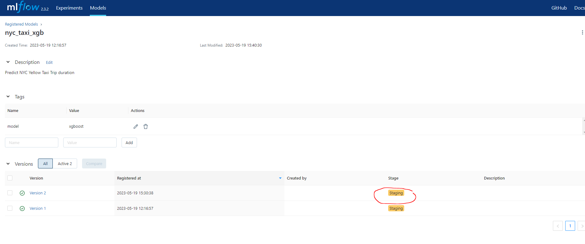
Add annotations
from datetime import datetime
date = datetime.today().date()
client.update_model_version(
name=model_name,
version=model_version,
description=f"The model version {model_version} was transitioned to {new_stage} on {date}"
)<ModelVersion: aliases=[], creation_timestamp=1684503038967, current_stage='Staging', description='The model version 2 was transitioned to Staging on 2023-05-19', last_updated_timestamp=1684504091974, name='nyc_taxi_xgb', run_id='fd2b3236374d4d0c933cad45678251fe', run_link=None, source='/home/stephen137/Blog/posts/MLOps_Zoomcamp_Module_2/mlruns/3/fd2b3236374d4d0c933cad45678251fe/artifacts/model', status='READY', status_message=None, tags={}, user_id=None, version=2>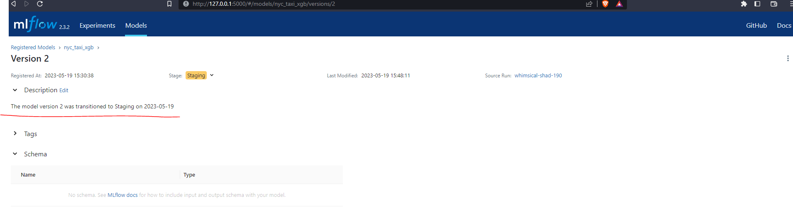
Let’s add Version 1 to Production for use in the illustration that follows in the next section.
model_version = 1
new_stage = "Production"
client.transition_model_version_stage(
name=model_name,
version=model_version,
stage=new_stage,
archive_existing_versions=False #
)
from datetime import datetime
date = datetime.today().date()
client.update_model_version(
name=model_name,
version=model_version,
description=f"The model version {model_version} was transitioned to {new_stage} on {date}"
)<ModelVersion: aliases=[], creation_timestamp=1684491417632, current_stage='Production', description='The model version 1 was transitioned to Production on 2023-05-19', last_updated_timestamp=1684505743784, name='nyc_taxi_xgb', run_id='fd2b3236374d4d0c933cad45678251fe', run_link='', source='/home/stephen137/Blog/posts/MLOps_Zoomcamp_Module_2/mlruns/3/fd2b3236374d4d0c933cad45678251fe/artifacts/models_mlflow', status='READY', status_message=None, tags={}, user_id=None, version=1>2.5.6 Comparing versions and selecting the new “Production” model
In this last section, we will retrieve models registered in the model registry and compare their performance on an unseen test set. The idea is to simulate the scenario in which a deployment engineer has to interact with the model registry to decide whether to update the model version that is in production or not.
These are the steps:
- Load the test dataset, which corresponds to the NYC Yellow Taxi data from the month of March 2022.
- Download the DictVectorizer that was fitted using the training data and saved to MLflow as an artifact, and load it with pickle.
- Preprocess the test set using the DictVectorizer
- Make predictions on the test set using the model version that is currently in the “Production” stage
- Based on the results, update the “Production” model version accordingly
Model registry
The model registry doesn’t actually deploy the model to production when you transition a model to the “Production” stage, it just assign a label to that model version. You should complement the registry with some CI/CD code that does the actual deployment.
# import packages
from sklearn.metrics import mean_squared_error
import pandas as pd# download March 2022 yellow taxi data as `test` dataset
# we used Feb 2022 for validation (which is sometimes also effectively the 'test' set)
!wget https://d37ci6vzurychx.cloudfront.net/trip-data/yellow_tripdata_2022-03.parquet --2023-05-19 16:20:39-- https://d37ci6vzurychx.cloudfront.net/trip-data/yellow_tripdata_2022-03.parquet
Resolving d37ci6vzurychx.cloudfront.net (d37ci6vzurychx.cloudfront.net)... 18.244.96.103, 18.244.96.218, 18.244.96.180, ...
Connecting to d37ci6vzurychx.cloudfront.net (d37ci6vzurychx.cloudfront.net)|18.244.96.103|:443... connected.
HTTP request sent, awaiting response... 200 OK
Length: 55682369 (53M) [application/x-www-form-urlencoded]
Saving to: ‘yellow_tripdata_2022-03.parquet’
yellow_tripdata_202 100%[===================>] 53.10M 53.9MB/s in 1.0s
2023-05-19 16:20:40 (53.9 MB/s) - ‘yellow_tripdata_2022-03.parquet’ saved [55682369/55682369]
# create our functions
def read_dataframe(filename):
if filename.endswith('.csv'):
df = pd.read_csv(filename)
df.tpep_dropoff_datetime = pd.to_datetime(df.tpep_dropoff_datetime)
df.tpep_pickup_datetime = pd.to_datetime(df.tpep_pickup_datetime)
elif filename.endswith('.parquet'):
df = pd.read_parquet(filename)
df['duration'] = df.tpep_dropoff_datetime - df.tpep_pickup_datetime
df.duration = df.duration.apply(lambda td: td.total_seconds() / 60)
df = df[(df.duration >= 1) & (df.duration <= 60)]
categorical = ['PULocationID', 'DOLocationID']
df[categorical] = df[categorical].astype(str)
return df
def preprocess(df, dv):
df['PU_DO'] = df['PULocationID'] + '_' + df['DOLocationID']
categorical = ['PU_DO']
numerical = ['trip_distance']
train_dicts = df[categorical + numerical].to_dict(orient='records')
return dv.transform(train_dicts) # not fitting the pre-processor again
def test_model(name, stage, X_test, y_test):
model = mlflow.pyfunc.load_model(f"models:/{name}/{stage}")
y_pred = model.predict(X_test)
return {"rmse": mean_squared_error(y_test, y_pred, squared=False)}Load the test dataset, which corresponds to the NYC Yellow Taxi data from the month of March 2022
df = read_dataframe("yellow_tripdata_2022-03.parquet")Download the DictVectorizer that was fitted using the training data and saved to MLflow as an artifact, and load it with pickle
client.download_artifacts(run_id=run_id, path='preprocessor', dst_path='.') # downloaded locally/tmp/ipykernel_611/2852634549.py:1: FutureWarning: ``mlflow.tracking.client.MlflowClient.download_artifacts`` is deprecated since 2.0. This method will be removed in a future release. Use ``mlflow.artifacts.download_artifacts`` instead.
client.download_artifacts(run_id=run_id, path='preprocessor', dst_path='.')'/home/stephen137/Blog/posts/MLOps_Zoomcamp_Module_2/preprocessor'import pickle
with open("preprocessor/preprocessor.b", "rb") as f_in:
dv = pickle.load(f_in)Preprocess the test set using the DictVectorizer
X_test = preprocess(df, dv)Make predictions on the test set - model in Production
target = "duration"
y_test = df[target].values%time test_model(name=model_name, stage="Production", X_test=X_test, y_test=y_test) # magic command % to clock the test2023/05/19 16:29:14 WARNING mlflow.pyfunc: Detected one or more mismatches between the model's dependencies and the current Python environment:
- mlflow (current: 2.3.2, required: mlflow==2.3)
To fix the mismatches, call `mlflow.pyfunc.get_model_dependencies(model_uri)` to fetch the model's environment and install dependencies using the resulting environment file.[16:29:14] WARNING: ../src/objective/regression_obj.cu:213: reg:linear is now deprecated in favor of reg:squarederror.
CPU times: user 10.3 s, sys: 25.5 ms, total: 10.3 s
Wall time: 809 ms{'rmse': 6.505082976506096}So the RMSE is only slightly higher 6.505 (and performace slightly worse) when tested on the unseen March 2022 data, than the validation set metric of 6.171.
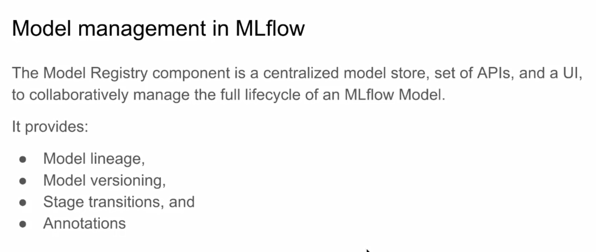
2.6 MLflow in practice
Let’s consider three scenarios:
- A single data scientist participating in an ML competition
- A cross-functional team with one data scientist working on an ML model
- Multiple data scientists working on multiple ML models
2.6.1 A single data scientist participating in an ML competition
In this use case, having a remote tracking server would be overkill. Sharing information with others is not a requirement and using a model registry would be useless, because there is no likelihood of model deployment to production.
MLflow setup:
- Tracking server: no
- Backend store: local filesystem
- Artifacts store: local filesystem
The experiments can be explored locally by launching the MLflow UI.
2.6.2 A cross-functional team with one data scientist working on an ML model
Information will require to be shared with the cross-functional team, but there is not necessarily a necessity to run a tracking server remotely - locally may well be enough. Using the model registry might be a good idea to manage the life cycle of the models, but it is not clear whether we need to run it remotely or on the local host.
MLflow setup:
- Tracking server: yes, local server
- Backend store: sqlite database
- Artifacts store: local filesystem
The experiments can be explored locally by accessing the local tracking server.
To run this example you need to launch the mlflow server locally by running the following command in your terminal:
mlflow server --backend-store-uri sqlite:///backend.db2.6.3 Multiple data scientists working on multiple ML models
Sharing information is very important in this scenario. There is collaboration between scientists to build models and so they need a remote tracking server, and they should make use of model registry.
MLflow setup:
- Tracking server: yes, remote server (EC2).
- Backend store: postgresql database.
- Artifacts store: s3 bucket.
The experiments can be explored by accessing the remote server.
The exampe uses AWS to host a remote server. In order to run the example you’ll need an AWS account. Follow the steps described below to create a new AWS account and launch the tracking server.
2.6.4 Setting up an AWS account
Basic AWS setup
This tutorial explains how to configure a remote tracking server on AWS. We will use an RDS database as the backend store and an s3 bucket as the artifact store.
First, you need to create an AWS account. If you open a new account, AWS allows you to use some of their products for free but take into account that you may be charged for using the AWS services. More information here and here.
Launch a new EC2 instance.
For this, you can select one of the instance types that are free tier eligible. For example, we will select an Amazon Linux OS (Amazon Linux 2 AMI (HVM) - Kernel 5.10, SSD Volume Type) and a t2.micro instance type, which are free tier eligible.
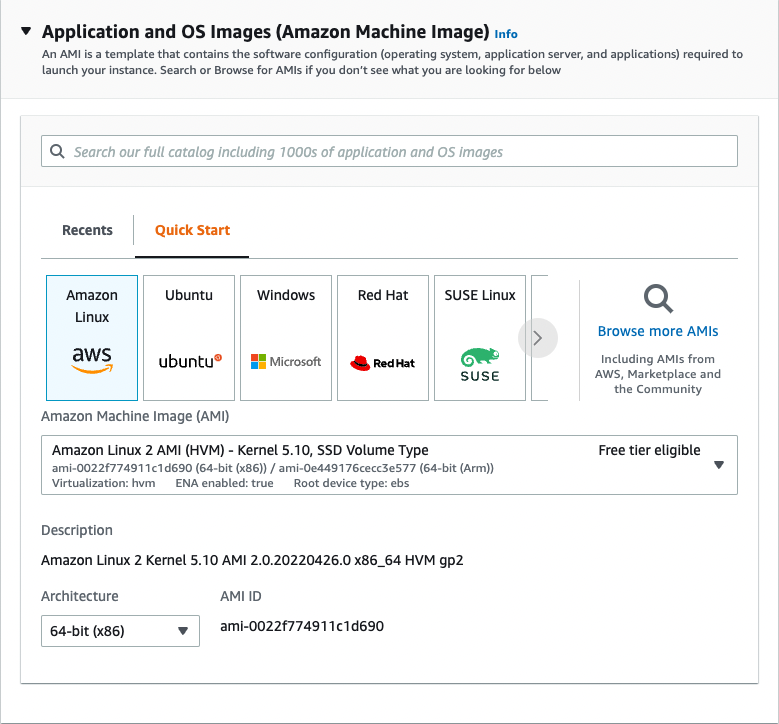
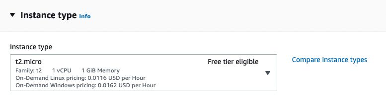
You’ll also need to create a new key pair so later you can connect to the new instance using SSH. Click on “Create new key pair” and complete the details like in the image below:
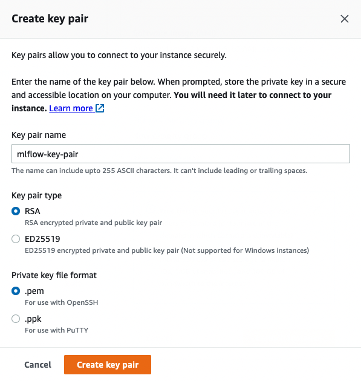
Select the new key pair and then click on “Launch Instance” :
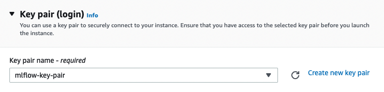
Finally, you have to edit the security group so the EC2 instance accepts SSH (port 22) and HTTP connections (port 5000):
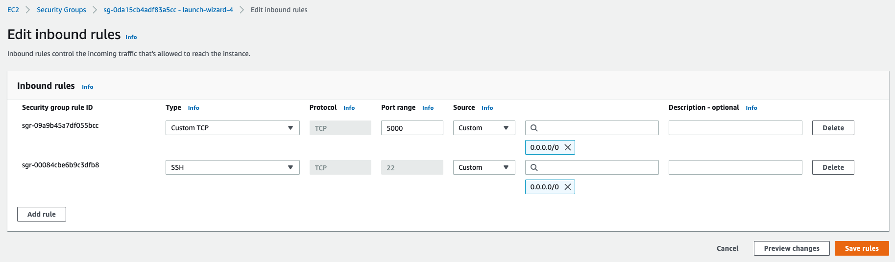
- Create an s3 bucket to be used as the artifact store.
Go to s3 and click on “Create bucket”. Fill in the bucket name as in the image below and let all the other configurations with their default values.

s3 bucket names
s3 bucket names must be unique across all AWS account in all the AWS Regions within a partition, that means that once a bucket is created, the name of that bucket cannot be used by another AWS account within the same region. If you get an error saying that the bucket name was already taken you can fix it easily by just changing the name to something like mlflow-artifacts-remote-2 or another name.
- Create a new PostgreSQL database to be used as the backend store
Go to the RDS Console and click on “Create database”. Make sure to select “PostgreSQL” engine type and the “Free tier” template.
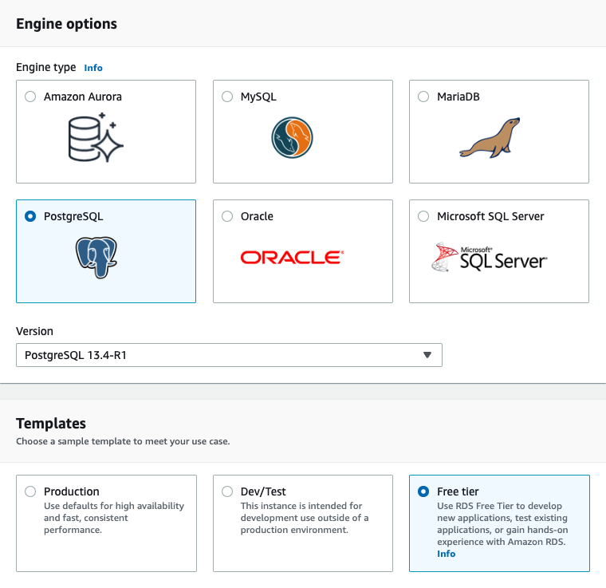
Select a name for your DB instance, set the master username as “mlflow” and tick the option “Auto generate a password” so Amazon RDS generate a password automatically.
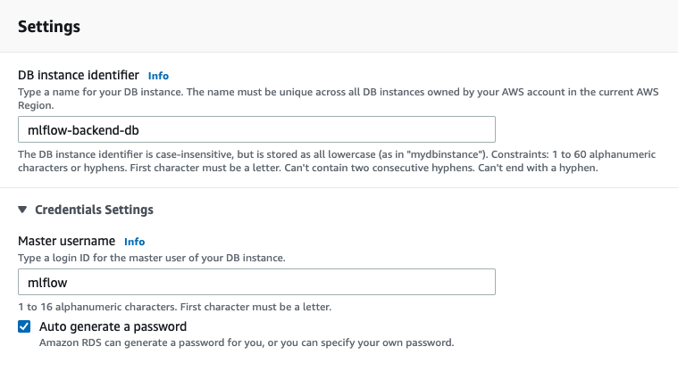
Finally, on the section “Additional configuration” specify a database name so RDS automatically creates an initial database for you :
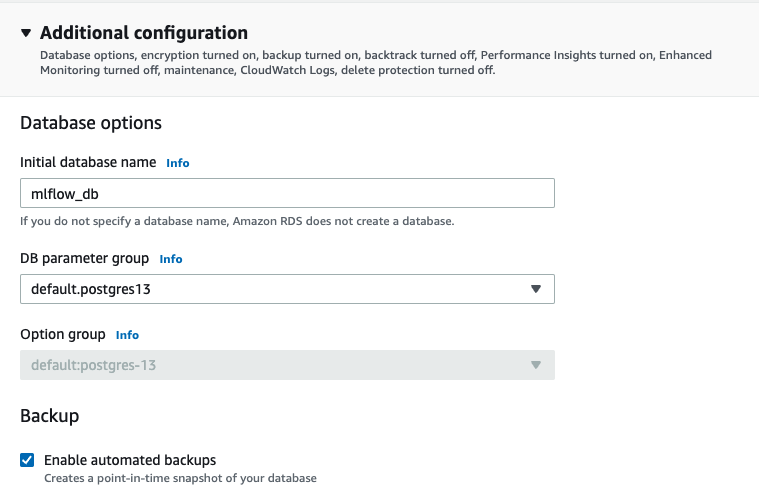
You can use the default values for all the other configurations.
Take note of the following information:
- master username
- password
- initial database name
- endpoint
Once the DB instance is created, go to the RDS console, select the new db and under “Connectivity & security” select the VPC security group. Modify the security group by adding a new inbound rule that allows postgreSQL connections on the port 5432 from the security group of the EC2 instance. This way, the server will be able to connect to the postgres database :

- Connect to the EC2 instance and launch the tracking server.
Go to the EC2 Console and find the instance launched on the step 2. Click on “Connect” and then follow the steps described in the tab “SSH”.
Run the following commands to install the dependencies, configure the environment and launch the server:
- sudo yum update
- pip3 install mlflow boto3 psycopg2-binary
- aws configure # you’ll need to input your AWS credentials here
- mlflow server -h 0.0.0.0 -p 5000 –backend-store-uri postgresql://DB_USER:DB_PASSWORD@DB_ENDPOINT:5432/DB_NAME –default-artifact-root s3://S3_BUCKET_NAME
Before launching server
Before launching the server, check that the instance can access the s3 bucket created in the step number 3. To do that, just run this command from the EC2 instance: aws s3 ls. You should see the bucket listed in the result.
- Access the remote tracking server from your local machine.
Open a new tab on your web browser and go to this address: http://<EC2_PUBLIC_DNS>:5000 (you can find the instance’s public DNS by checking the details of your instance in the EC2 Console).
2.6.5 Configuring ML Flow
Configuration will be different depending on the context. The three main aspects to consider are :
Backend store - local filesystem - SQLAlchemy compatible DB (e.g. SQLite)
Artifacts store - local filesystem - remote (e.g. s3 bucket)
Tracking server - no tracking server - localhost - remote
2.7 MLflow: benefits, limitations and alternatives
2.7.1 Remote tracking server
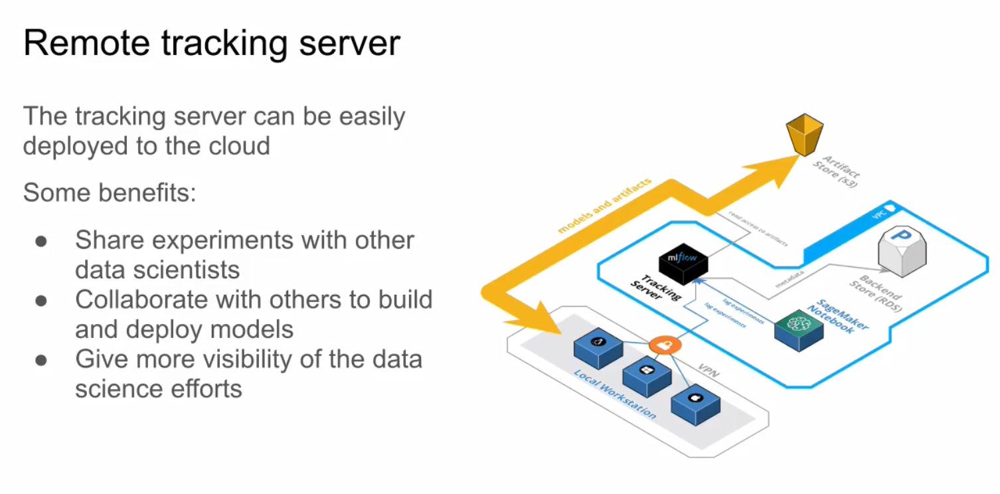
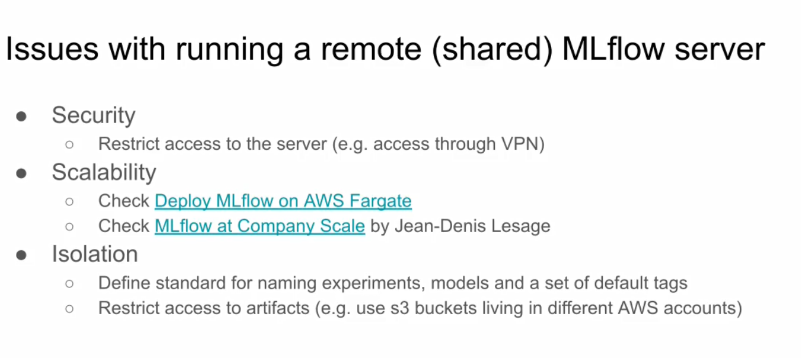
2.7.2 MLflow limitations
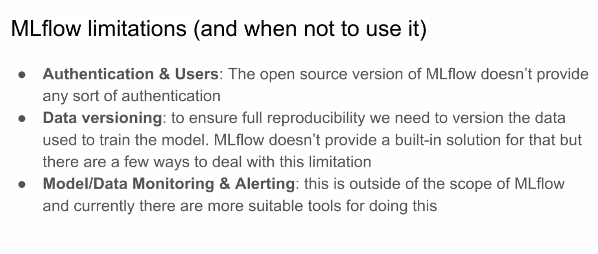
2.7.3 MLflow alternatives
There are some paid alternatives to MLflow, each with a free tier and offering a free trial:
Neptune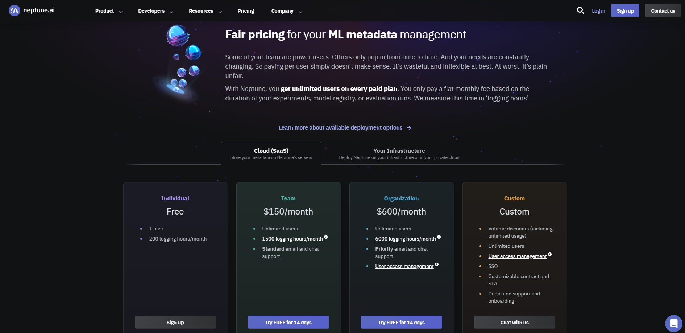
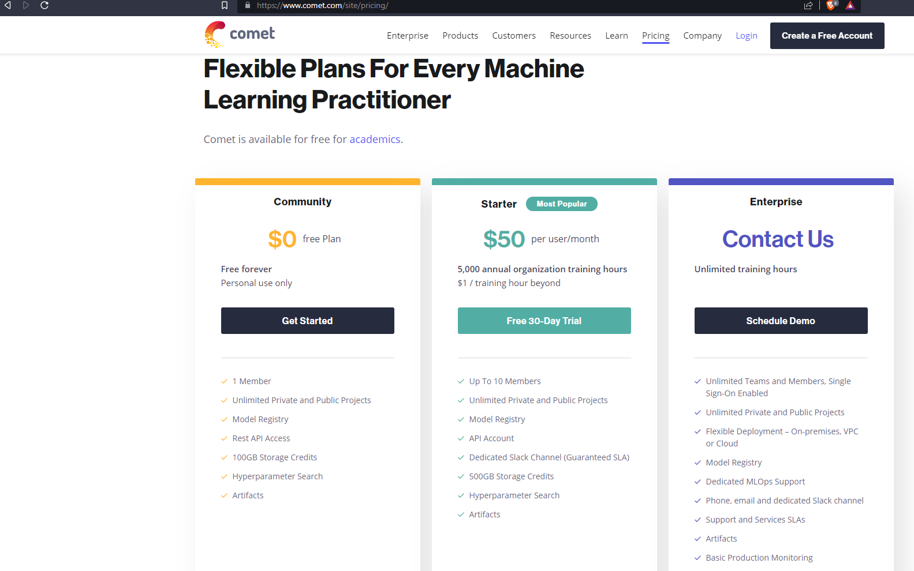
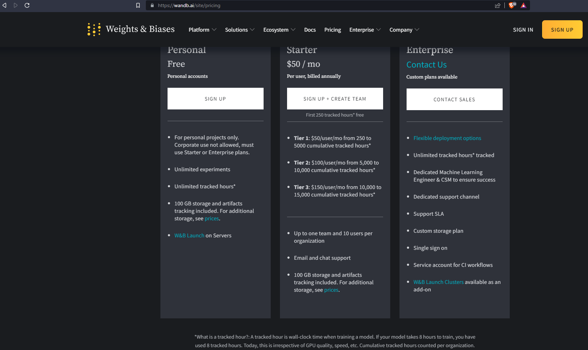
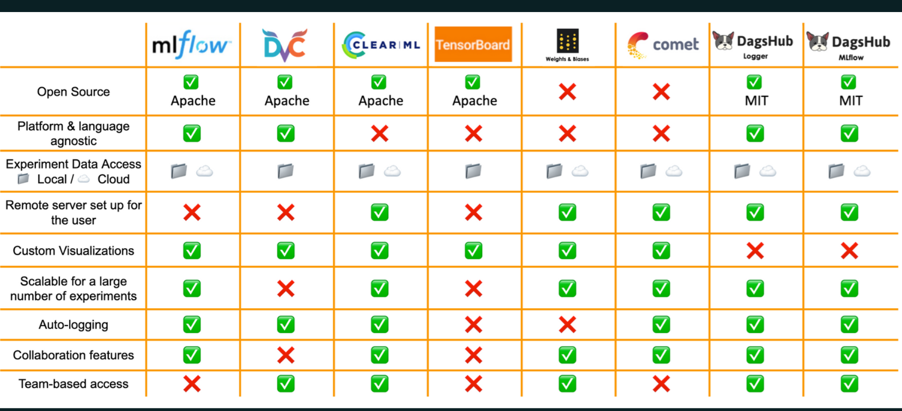
and many more.